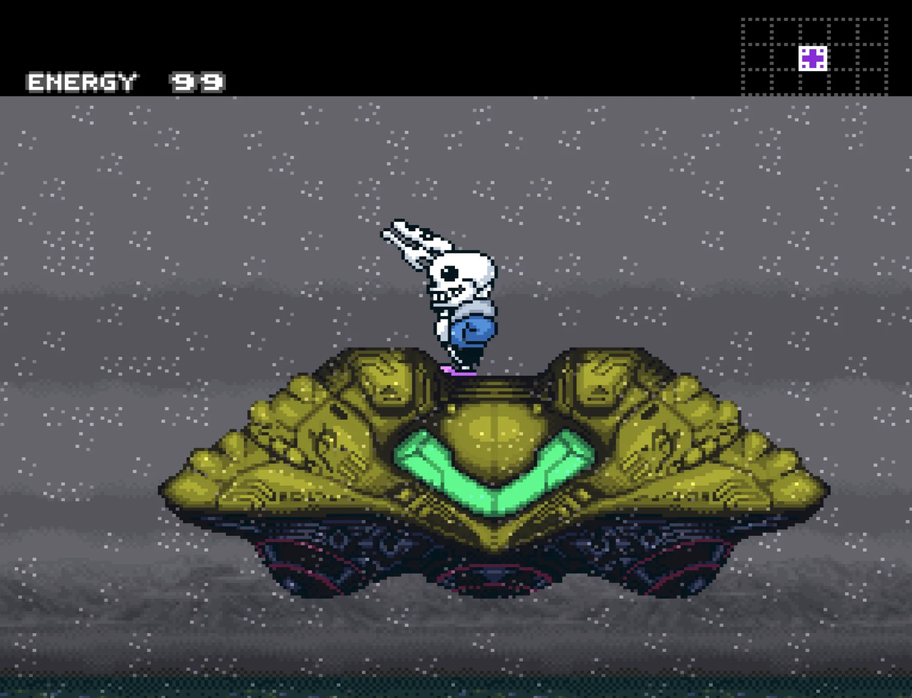
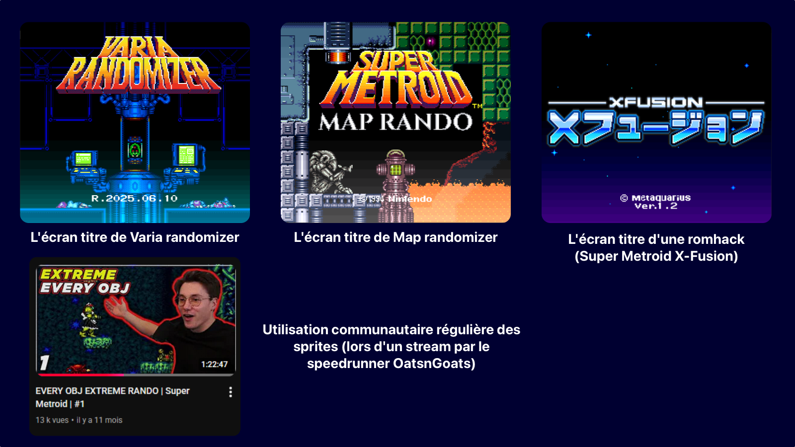
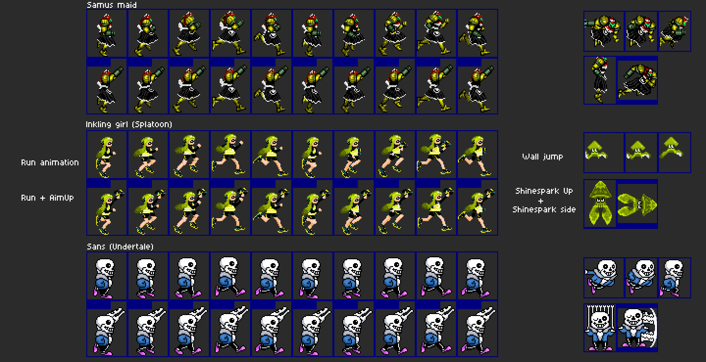
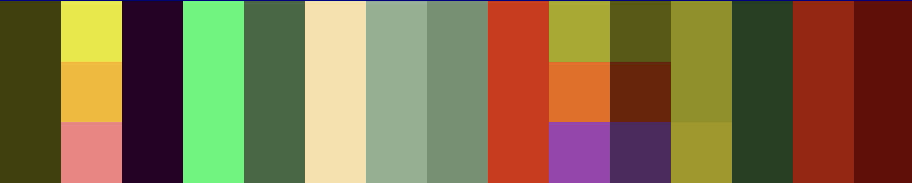
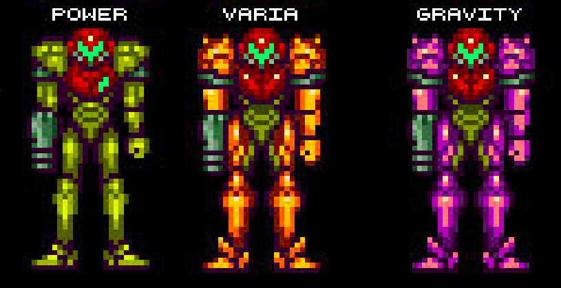

Création de custom sprites sur Super Metroid
Recréation complète des animations de Samus pour Sans, Inkling Girl et Samus Maid, en respectant les contraintes visuelles et techniques de Super Metroid sur SNES.

Point de départ
Super Metroid (SNES, 1994) est une référence du jeu d’exploration 2D, connue pour la lisibilité de ses animations, la précision de ses déplacements et la force de sa direction artistique malgré les limites techniques de l’époque.
C’est précisément ce cadre qui m’intéressait : remplacer entièrement l’identité visuelle du personnage principal tout en conservant la lisibilité et le rythme du jeu d’origine.
Contexte modding
Le projet s’inscrit dans la communauté de modding de Super Metroid, notamment autour des ROM hacks, de VARIA Randomizer et de Map Rando, où les parcours sont rapides, imprévisibles et rejoués à haut niveau.
VARIA Randomizer modifie surtout la répartition des objets et l'organisation des grandes zones de la carte, tandis que Map Rando recompose la carte salle par salle. Dans les deux cas, les trajets deviennent moins prévisibles et la lisibilité du sprite encore plus importante.
Dans ce contexte, un sprite custom doit rester immédiatement lisible en mouvement, y compris pendant des séquences très rapides ou des changements de direction fréquents.
Le projet n'est pas resté au stade d'exercice personnel : certains de mes sprites ont aussi été réutilisés par des joueurs de la communauté dans des parties et des runs de Map Rando, y compris ponctuellement par OatsnGoats. C'est un bon indicateur de lisibilité et d'intégration réelle en jeu, au-delà du simple rendu sur feuille de sprites.

Sprites pensés pour l’écosystème Super Metroid modding, jusque dans des runs de Map Rando.
Ce que j’ai réalisé
J’ai recréé l’ensemble des sprites du personnage de base (Samus) pour trois variantes finalisées :
- Sans (Undertale)
- Inkling Girl (Splatoon)
- Samus Maid (variante stylisée)
Le travail couvre les poses principales (idle, course, saut, visée, tirs, morphball, shinespark, etc.) avec adaptation des animations pour conserver le rythme du jeu original.
L’objectif n’était pas de modifier une partie du personnage : j’ai remplacé l’intégralité des animations de Samus pour chaque variante.
Chaque variante représente à elle seule 582 sprites remplacés et ajustés.
Enjeu du projet
Le défi n'était pas seulement graphique. Il fallait faire entrer des personnages aux proportions, silhouettes et codes visuels très différents dans un système d'animation déjà défini, sans perdre la lisibilité immédiate qui fait la qualité de Super Metroid en jeu.

Même jeu d’animations, trois personnages : adaptation des poses, silhouettes et actions spéciales.
Contraintes techniques SNES
Le design devait respecter des limites strictes liées à la console :
- Taille des sprites et découpage en tiles
- Palette limitée à 16 couleurs dont 1 transparente (donc 15 couleurs visibles)
- Aucune animation ajoutable : il faut respecter strictement les slots vanilla (ex : 4 frames idle, 8 frames course, 1 frame shinespark)
- Lisibilité immédiate sur des animations courtes
- Cohérence visuelle entre toutes les frames d’action
Ce cadre impose des choix de simplification précis : silhouette, contraste et timing priment sur le détail décoratif.
Palettes des suits
Super Metroid applique des variations de couleurs selon les suits. Pour rester cohérent avec le jeu, j’ai travaillé avec des palettes dédiées Power, Varia et Gravity.
La palette ci-dessous montre les couleurs utilisées pour les 3 suits (hors pixel transparent), suivie de la référence visuelle des 3 versions originales de Samus.


Pipeline de création (Aseprite)
J’ai utilisé Aseprite pour produire les sprites frame par frame, en m’appuyant sur des références de chaque univers afin de garder l’identité du personnage tout en respectant la grammaire visuelle de Super Metroid.
- Construction des key poses puis in-between
- Vérification en boucle dans le rythme réel du jeu
- Palette et teintes custom selon chaque suit : Power Suit, Varia Suit, Gravity Suit
- Ajustements d’échelle pour coller au gabarit de Samus dans Super Metroid (ex : Sans est petit dans son jeu d’origine, mais son sprite de combat est trop grand pour être repris tel quel)
- Ajustements palette pour garder la lisibilité en mouvement
- Intégration et tests in-game avec SpriteSomething pour injecter les sprites dans Super Metroid
Le test en jeu était indispensable : un sprite réussi sur feuille ou dans Aseprite peut devenir illisible une fois intégré au rythme réel de Super Metroid. La validation passait donc par l'animation, pas seulement par l'image fixe.
Exemple d’action spéciale adaptée en jeu : course, visée, morph et Shinespark.
Exemples d’adaptation créative
Certaines animations m'ont obligé à adapter des mouvements ou signes visuels emblématiques de chaque univers dans les slots existants de Super Metroid, un peu comme Super Smash Bros réinterprète des gestes iconiques d'une série dans son propre système d'attaque.
- Pour Inkling Girl, j’ai utilisé l’idée de transformation humanoïde / calamar pour la morphball
- Sur l’animation du shinespark d’Inkling Girl, j’ai repris l’attaque spéciale du Kraken, adaptée au cadre imposé par Super Metroid
- Sur Sans, le canon de Samus est remplacé par un Gaster Blaster et le shinespark est réinterprété avec des visuels d’os inspirés de sa manière d’attaquer dans Undertale
- Sur les poses de course, de saut et de visée, j’ai simplifié certains volumes pour garder une lecture immédiate malgré la petite taille d’affichage
Ce que ce projet m’a permis de développer
Ce travail m’a appris à créer dans un cadre très contraint, en validant chaque choix directement en jeu plutôt qu’à partir d’une feuille de sprites statique. Il m’a fait progresser sur :
- L’analyse puis la reconstruction d’animations existantes sans casser leur rythme
- La maîtrise des contraintes techniques rétro : palette, taille, contraste et lisibilité
- La cohérence visuelle entre des univers très différents intégrés dans un même jeu
- La précision d’exécution frame par frame